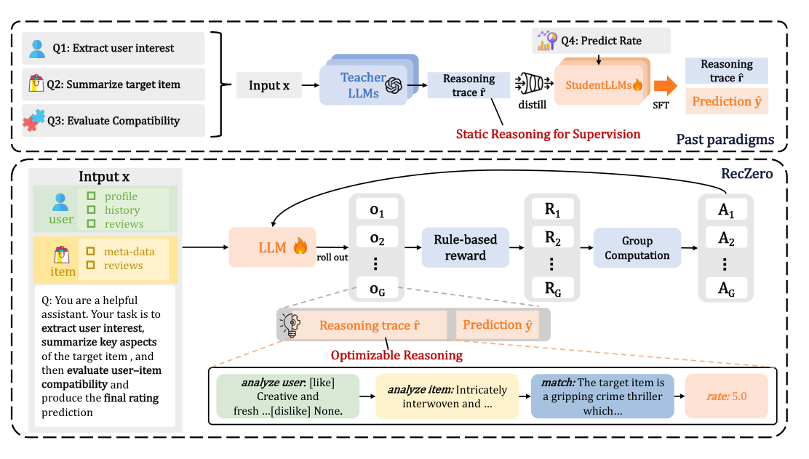

Think before Recommendation: Autonomous Reasoning-enhanced Recommender (先思考再推荐：自主推理增强推荐器)
- 会议/期刊: NeurIPS 2025 (Poster)
- 作者与机构: Xiaoyu Kong, Junguang Jiang, Bin Liu, Ziru Xu, Han Zhu, Jian Xu, Bo Zheng (阿里淘天)；Jiancan Wu (合肥国家科学中心/上海数据科学重点实验室)；Xiang Wang (新加坡国立大学)
- 推荐链路定位: 精排（评分预测 / Rating Prediction）
- 研究方向: 大语言模型推荐 (LLM4Rec) / 强化学习与动态探索推荐
- 论文原文: https://arxiv.org/abs/2510.23077v1
- 开源代码: https://github.com/AkaliKong/RecZero
TL;DR (1分钟核心速览)
现有 LLM 推理增强推荐普遍走「教师模型生成推理链 → 学生 SFT 蒸馏」路线，但教师缺乏推荐领域知识、监督数据昂贵且静态、学生只学到表面模仿。本文提出 RecZero：抛弃多模型多阶段蒸馏，用纯 GRPO 强化学习训练单个 LLM，配合「Think-before-Recommendation」结构化标签模板与规则化奖励（格式奖励 + 连续评分误差奖励），让模型自主习得推理能力；进一步提出 SFT 冷启动 + RL 精调的混合范式 RecOne。在 Book/Music/Yelp 三个数据集上，RecOne 将最强基线 Reason4Rec 的 MAE 分别再降 16.8% / 29.9% / 7.5%，且仅用 12% 标注量。
Background & Motivation (背景与核心矛盾)
- 主流范式: 以 Rec-SA VER、EXP3RT、Reason4Rec 为代表，先用 ChatGPT/DeepSeek 等通用教师模型为每条样本生成「用户偏好提取 + 物品特征总结 + 匹配推理」的思维链，再构造指令样本 SFT 蒸馏到小模型。
- 前人局限一（教师能力错配）: 通用教师缺乏推荐域知识，其生成的推理链与评分预测目标不对齐，次优推理直接成为学生的性能天花板。
- 前人局限二（监督昂贵且静态）: 高质量推理数据依赖人工标注或 LLM API 调用，成本高；学生只能被动消费静态教师输出，无法主动修正推理过程，且易过拟合教师指令分布、泛化差。
- 核心洞察 (Key Insight): 评分预测的奖励信号（预测值与真实评分的误差）本身是可计算、稠密、无需标注的，因此完全可以把「推理链质量」交给 RL 通过最终预测误差反向优化，而非依赖教师示范。
- 本文切入点: 用 GRPO + 规则奖励，把用户分析、物品分析、匹配、打分四个步骤放进同一个可微优化目标下联合训练，实现「推理为推荐服务」的端到端对齐。
Method (核心方法设计)
1. 整体框架 (Overall Architecture)
输入为用户历史交互序列 \(H_u\)（含物品元信息、评分、评论）与目标物品元信息\(M_i\)，拼接为 prompt\(x_{u,i}\)。LLM 在结构化系统提示约束下依次生成四段带特殊标签的输出：<analyze user>（逐条抽取历史物品的 [like]/[dislike] 并汇总为 [pos]/[neg] 偏好）、<analyze item>（预测目标物品可能被喜欢/讨厌的方面）、<match>（显式连接用户偏好与物品属性做匹配论证）、<rate>（输出小数评分）。RecZero 直接用 GRPO 对该策略做纯 RL 优化；RecOne 则先用 DeepSeek-R1 生成的少量高质量推理轨迹做 SFT 冷启动，再接入同一 RL 流程精调。推理时单模型单阶段前向解码即得评分，无需 logit 加权。
flowchart TD
A["输入 x: 用户历史 H_u + 目标物品 M_i"] --> B["结构化 Prompt: analyze user / analyze item / match / rate"]
B --> C["LLM 采样 G 条推理轨迹"]
C --> D["规则奖励: R_format + R_answer"]
D --> E["组内相对优势 Â_i → GRPO 更新"]
E --> C
C --> F["推理: 单次前向输出 <rate> 小数评分"]
2. 关键设计拆解 (Key Designs)
-
「Think-before-Recommendation」结构化标签模板：前人用冻结 LLM few-shot 做偏好抽取，输出格式漂移、无法优化。本文将推理强制切分为四个标签段，把评分预测分解为离散可验证步骤，使每一步输出都可被规则解析、被奖励函数定位，从而让 RL 能精确作用于「推理链」而非仅最终答案。
-
规则化奖励建模（格式 + 连续误差）：这是全文最关键的算子改动。格式奖励为二值惩罚： $\(R_{\text{format}}=\begin{cases}0.5 & \text{格式正确}\\ -0.5 & \text{格式错误}\end{cases}\)$ 答案奖励放弃「整数对错」的稀疏信号，改为连续误差奖励： $\(R_{\text{answer}}=1-\frac{|y-\hat{y}|}{\text{max\_error}},\quad R=R_{\text{format}}+R_{\text{answer}}\)$ 其中评分域 1–5 时 \(\text{max\_error}=4\)。物理直觉：连续奖励使模型有动力输出小数评分逼近真值，而非像 SFT 那样模仿整数标签再靠 logit 加权解码，直接优化 MAE 目标且省去后处理。
-
GRPO 组相对优化与训练目标：对同一 prompt 采样 \(G\)条轨迹，用组内标准化优势\(\hat{A}_i=\frac{R_i-\text{mean}(\{R_1..R_G\})}{\text{std}(\{R_1..R_G\})}\) 替代 critic 网络，目标为带 clip 与 KL 正则的 PPO 式代理损失： $\(J_{\text{GRPO}}(\theta)=\mathbb{E}\Big[\tfrac{1}{G}\sum_{i}\tfrac{1}{|y_i|}\sum_{t}\min\big(\rho_{i,t}\hat{A}_{i,t},\ \text{clip}(\rho_{i,t},1-\epsilon,1+\epsilon)\hat{A}_{i,t}\big)-\beta D_{\text{KL}}\big]\)$ 其中 \(\rho_{i,t}=\pi_\theta(y_{i,t}|x,y_{i,<t})/\pi_{\theta_{\text{old}}}(\cdot)\)。免负采样、免奖励模型、免标注，仅需组内相对比较即可稳定训练。RecOne 冷启动阶段额外构造对齐/纠偏两类轨迹\(\mathcal{D}_{\text{align}}\)与\(\mathcal{D}_{\text{misalign}}\)（后者由教师看到真值后重写合理化推理），以自回归损失做 SFT 初始化。
Experimental Setup & Evaluation Protocol (实验设置与评估协议)
- 数据集与预处理: 沿用 Reason4Rec 发布的版本，覆盖 Book、Music（Amazon 子集）与 Yelp 三个域，每条样本含用户历史（元信息 + 评分 + 评论）与目标物品元信息。原文未给出显式 \(k\)-core 过滤与交互量统计表，仅说明冷启动实验从训练/测试集之外另取 1000 条样本。
| 数据集 | 域 | 输入构成 | 评分域 | 用途 |
|---|---|---|---|---|
| Book | Amazon 图书 | 历史评分+评论+元信息 | 1–5 | 主实验 |
| Music | Amazon 音乐 | 历史评分+评论+元信息 | 1–5 | 主实验 + 成本分析 |
| Yelp | 本地生活 | 历史评分+评论+元信息 | 1–5 | 主实验 |
- 数据划分与防穿越 (Splitting Strategy): 沿用 Reason4Rec 的样本级划分（训练/测试），冷启动 1000 条样本严格排除在训练与测试集之外，避免泄漏。
- 排名评测协议 (Ranking Protocol): 本文任务是评分预测而非排序，故不涉及 Full-Ranking / Sampled Ranking；采用回归指标 MAE 与 RMSE（越小越好），对每条测试样本单次前向解码取
<rate>数值。 - 对比基线与超参设置: 基线覆盖三类——CF（MF）、评论建模（DeepCoNN / NARRE / DAML）、LLM 推理增强（Rec-SA VER / EXP3RT / Reason4Rec）。骨干为 Qwen2.5-7B-Instruct-1M，batch size 8，学习率 2e-6，每样本 8 次 rollout，采样温度 1.0，KL 系数 0，训练 1 epoch；RecOne 冷启动数据由 DeepSeek-R1 生成。硬件为 8×H20。
Key Experimental Results (实验关键数据)
1. 主实验对比 (Main Results)
| 方法 | 类别 | Book RMSE | Book MAE | Music RMSE | Music MAE | Yelp RMSE | Yelp MAE |
|---|---|---|---|---|---|---|---|
| MF | CF | 0.8565 | 0.6277 | 0.8142 | 0.6188 | 1.0711 | 0.7980 |
| NARRE | Review | 0.8435 | 0.6242 | 0.7881 | 0.5799 | 1.0785 | 0.8177 |
| DAML | Review | 0.8371 | 0.6214 | 0.7848 | 0.5703 | 1.0405 | 0.7964 |
| Rec-SA VER | LLM | 0.9356 | 0.6645 | 0.9262 | 0.6463 | 1.1282 | 0.8295 |
| EXP3RT | LLM | 0.9346 | 0.6042 | 0.8312 | 0.5548 | 1.1420 | 0.8236 |
| Reason4Rec | LLM | 0.8325 | 0.5937 | 0.7647 | 0.5352 | 0.9972 | 0.7473 |
| RecZero | RL | 0.8387 | 0.5253 | 0.7058 | 0.4271 | 1.0521 | 0.7429 |
| RecOne | SFT+RL | 0.7784 | 0.5017 | 0.6776 | 0.3816 | 0.9774 | 0.7012 |
| Improv.% (vs 最强基线) | — | -6.5% | -15.5% | -11.4% | -28.7% | -2.0% | -6.2% |
注：原文摘要口径为 RMSE 降 6.7%/12.2%/6.2%、MAE 降 16.8%/29.9%/7.5%（以 Reason4Rec 为参照的官方报告值）；上表按表 1 原始数值复算，差异源于四舍五入与参照基线选取。
2. 消融实验 (Ablation Study)
| 变体 | 关键改动 | Book MAE | Music MAE | Yelp MAE | 结论 |
|---|---|---|---|---|---|
| RecOne (full) | 三步推理 + 连续奖励 + RL | 最优 | 最优 | 最优 | 完整范式最佳 |
| No Thinking Process | 直接输出评分 | 显著变差 | 显著变差 | 显著变差 | 推理链本身有增益 |
| No Multi-step Thinking | 单步 <think> 替代三步 |
居中 | 居中 | 居中 | 三步分解优于单步 |
| Correctness Reward Only | 仅整数对错奖励（对 2 分/错 0 分） | 明显下降 | 明显下降 | 明显下降 | 连续奖励是关键 |
| Only SFT warm-start | 去掉 RL，仅教师蒸馏 SFT | 最差 | 最差 | 最差 | 纯模仿不如 RL 优化 |
（原文消融以图 4 柱状图呈现，未给具体数值，此处按趋势归纳。）
3. 关键实验发现 (Key Findings)
- 纯 RL 已能超越全部蒸馏基线：RecZero 无任何教师示范、无冷启动，在三个数据集 MAE 上均优于 Reason4Rec（0.5253 vs 0.5937 / 0.4271 vs 0.5352 / 0.7429 vs 0.7473），说明「可计算奖励 + 组相对优化」足以替代静态监督。
- 连续误差奖励是 MAE 增益的主因：Correctness Reward Only 变体明显劣化，因为整数对错奖励诱导模型输出整数评分而非逼近真值的小数，抑制了 MAE 优化方向；这解释了 RecZero 在 MAE 上大幅领先却在部分 RMSE 上不敌 Reason4Rec 的现象。
- 冷启动显著抬高 RL 上限且更省成本：RecOne 全程优于 RecZero（图 3，200 步内持续领先）；成本侧，RecZero(early-stop) 仅用 0.48K 标注（-97.6%）、0.4 GPU 时（-33%）、331 推理 token 即达 MAE 0.5419，已优于耗 20K 标注、0.6 GPU 时、597 token 的 RecOne(SFT)（MAE 0.6472），单位标注的误差下降效率超 5 倍。
Highlights & Limitations (亮点、对比与审稿批判)
- 与代表作对比 (vs. Prior Work): 与 Rec-SA VER / EXP3RT / Reason4Rec 的本质区别在于优化信号来源——前两者靠教师示范（离线、静态、与推荐目标弱对齐），本文靠推荐任务自身的可计算奖励（在线、可迭代、目标强对齐）；与 DeepSeek-R1-Zero 的区别在于把 RL 从数学/代码域迁移到推荐域，并设计了领域专用的四段式标签与连续评分奖励。
- 可迁移亮点: (1) 把「结构化标签 + 规则解析」作为 RL 的可验证中间表示，可迁移到任何需要可解释中间步骤的推荐任务（如列表重排理由生成）；(2) 连续误差奖励替代离散对错奖励，适用于所有回归型推荐目标（停留时长、GMV 预估）。
- 审稿级局限批判: (1) 仅在 7B 骨干与三个评分预测数据集上验证，未评估更大基座、排序/生成式任务，也未与工业级 CTR 模型对比，泛化边界不明；(2) 单样本需采样 8 条轨迹做组内比较，训练开销与推理 token 数（310–412）远高于传统精排，线上高 QPS 场景部署成本存疑；(3) 奖励函数中
max_error与格式奖惩系数为手工设定，缺乏敏感性分析。
Rating (四维评分)
- 方法创新性 (Novelty): ⭐⭐⭐⭐ （首次将纯 GRPO 范式系统迁移到推理增强评分预测，四段式标签 + 连续误差奖励设计贴合任务本质，但 RL 算法本身沿用 DeepSeek 体系）
- 评估协议与实验扎实度 (Protocol & Experiments): ⭐⭐⭐ （三域数据集 + 三类基线 + 消融 + 成本分析较完整，但缺少数据统计表、显著性检验，消融仅以柱状图呈现无具体数值）
- 写作与数学规范度 (Clarity & Rigor): ⭐⭐⭐⭐ （GRPO 目标、奖励函数与冷启动数据构造公式清晰，符号统一；部分实验数值口径在摘要与表 1 间存在轻微不一致）
- 工业落地与复现价值 (Industrial & Practical Value): ⭐⭐⭐⭐ （代码开源，单模型单阶段免教师流水线工程开销低，支持数百条新交互快速再优化；但推理 token 成本对高并发精排仍是门槛）